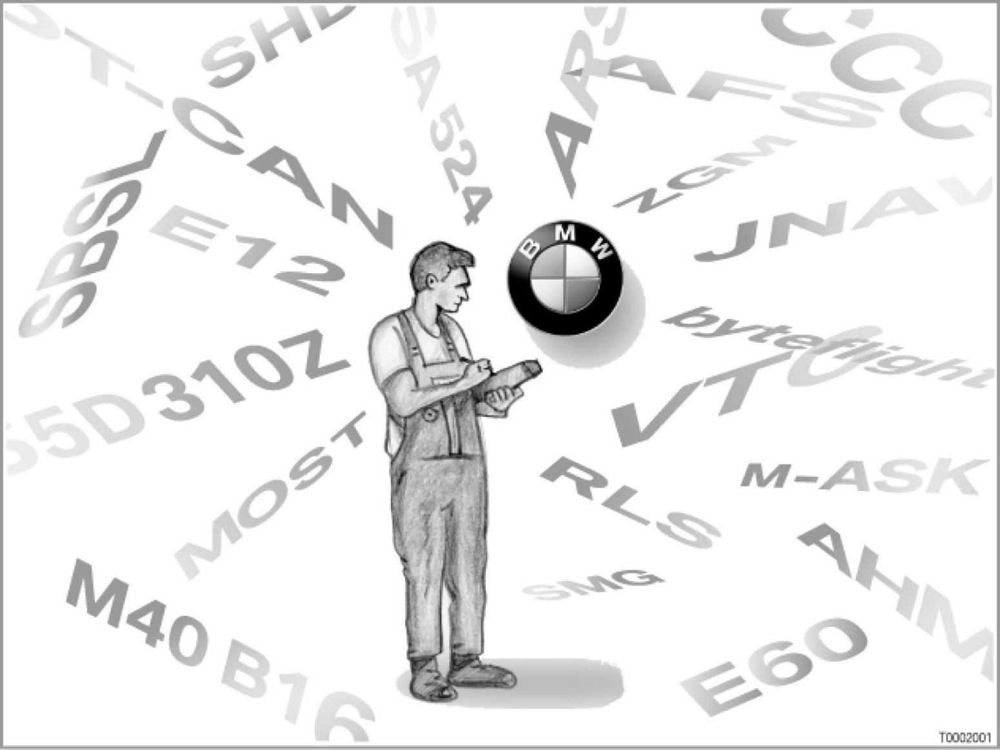

Abbreviations All Models
00 01 03 (035)
Abbreviations
All models
Introduction
BMW has a great many abbreviations: in Development, in Production, in Organization, in Sales and Marketing, in Testing Schedules and in Technical Vehicle Documentation.

BMW language: approximately 1,500 abbreviations in the technical area alone!
To support diagnosis, this SI Technology bulletin includes an abbreviation glossary.
Abbreviations can be like a secret language, especially for members of staff who are new to the trade or who have come from other areas of the workshop, but also for other persons with an interest in engineering. Abbreviations can be simple "catchwords", with a clear meaning.
These abbreviation glossaries are intended as an aid in this process.
Abbreviation glossaries
The following abbreviations lists are available:
- Model series and models with illustrations
Model series from recent years with illustrations, sales designations, engines, etc.
- Engines since 1983
Engines and associated electronic engine control systems
- Transmissions since 1986
Transmissions and associated electronic transmission control systems
- Control units: Update 07/07
Current control units in diagnosis and programming
- BMW Service Technology glossary:Update 07/07
More than 700 abbreviations from the field of BMW Service Technology.
New in comparison to the 2004 abbreviations list:
- Some abbreviations have been newly incorporated.
- Some abbreviations have been deleted. This is because: The volume of abbreviations should be kept as small as possible to make the document as easy and comfortable as possible to read.
- Some of the texts in the "Usage" column have been revised.
For reasons associated with the system, the glossary is divided into the following enclosures:
- Introduction, abbreviations with numbers and characters
- - A -
- - B -
- - C -
- - D -
- - E -
- - F -
- - G -
- - H -
- - I -
- - J -
- - K -
- - L -
- - M -
- - N -
- - O -
- - P -
- - Q -
- - R -
- - S -
- - T -
- - U -
- - V -
- - W -
- - X -
- - Z -
- Overview of main groups
Note: This SI Technology bulletin is also available as a PDF file.
This SBT can be called up as a PDF file from the internet
The SBT in PDF format is available in German and English.
The graphics in the PDF file are in color.
Note: Thank you for your assistance and feedback
We wish to thank the staff from the Diagnostics department, the Programming department, the Integration department, the Repair Instructions department and the Aftersales Training department for providing their lists and for their support in tallying the data.
Special thanks also go out to the Group Archive for providing pictures of early models and for the comprehensive, detailed proof-reading.
Subject to change.